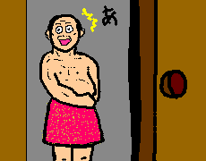

恐怖99％くだらなさ1％
とびらの向こうには...。

なにげなく開けてしまったドア。その向こうには母のスカートをはいている父の姿。もちろん、何が起こっているのかわかりません。父と目が合いどのくらい時間がたったのかもわかりません。明日から何を話せばいいのかもわかりません。今日、何かのアンケートで
尊敬している人の欄に「父」
と書いたことも今となってはもう、わかりません。混乱の極限。これは恐怖なのです。
怖かったでしょう...........。え？そうでもない？....................。
たまごっちゃんページを見る
目次へ戻る